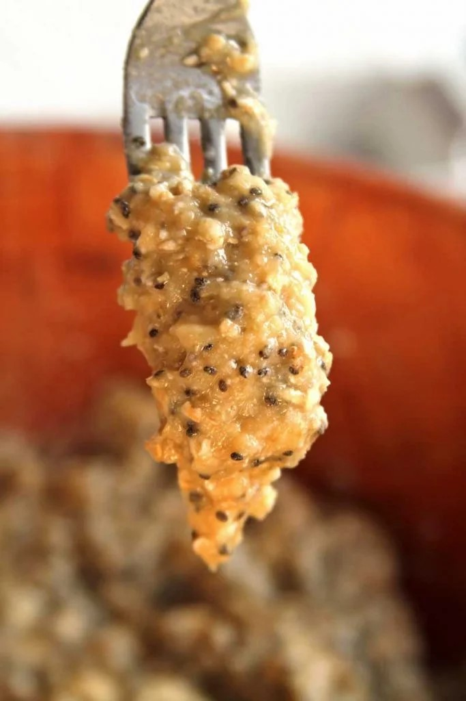

3 xícara de banana amassada (175 gramas)
1/3 xícara de suco de limão cravo ou siciliano (80 ml)
1/3 xícara de açúcar demerara (65 gramas)
1 xícara de farinha de amêndoas (120 gramas)
1/2 xícara de aveia em flocos finos sem glúten (60 gramas)
1 colher de sopa de fermento em pó (15 gramas)
2 colheres de sopa de sementes de chia (20 gramas – opcional)
1 Pitada de sal
Este bolinho é preparado rapidamente usando apenas 1 garfo, ele fica macio e com um delicioso gostinho cítrico.
Esta é uma receita muito rápida, preaqueça o forno a 180º C e depois unte 10 forminhas de silicone ou uma forma pequena de 20 x 20 centímetros.
Amasse bem as bananas com um garfo e depois meça 2/3 xícara, se sobrar um pouquinho a mais de banana não tem problema, mas não exagere na quantidade para não deixar a massa pesada.
Misture o suco de limão nas bananas formando um creme.
Adicione os demais ingredientes formando uma massa grossa.
Transfira a massa para as forminhas utilizando uma colher.
Asse por 15-20 minutos em forno preaquecido a 180º C ou até que você espete o palito e ele saia limpo.
Ponto da massa

Amasse primeiro as bananas e depois meça, o excesso de banana deixa a massa muito densa.
Se usar o limão tahiti na receita diminua a quantidade, use 1/4 xícara pois ele é mais ácido.
Substitua o açúcar demerada por açúcar mascavo ou adoçante. Com adoçante o bolo cresce menos e fica um pouco mais seco.
A farinha de amêndoas pode ser substituída por qualquer outra farinha de oleaginosa, amendoim ou sementes girassol.
Substitua a aveia por quinoa em flocos, mas com quinoa a textura fica um pouco diferente, o bolo cresce um pouco menos e fica um pouco menos fofinho.